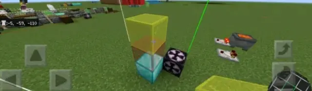
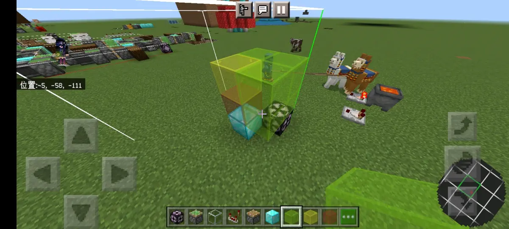
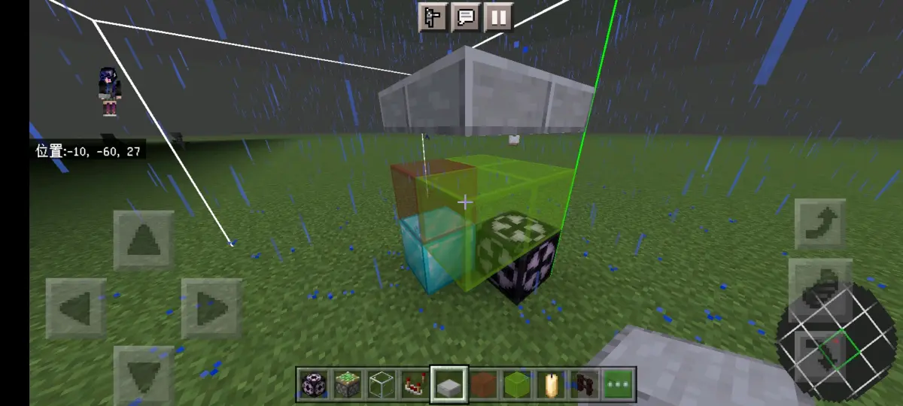
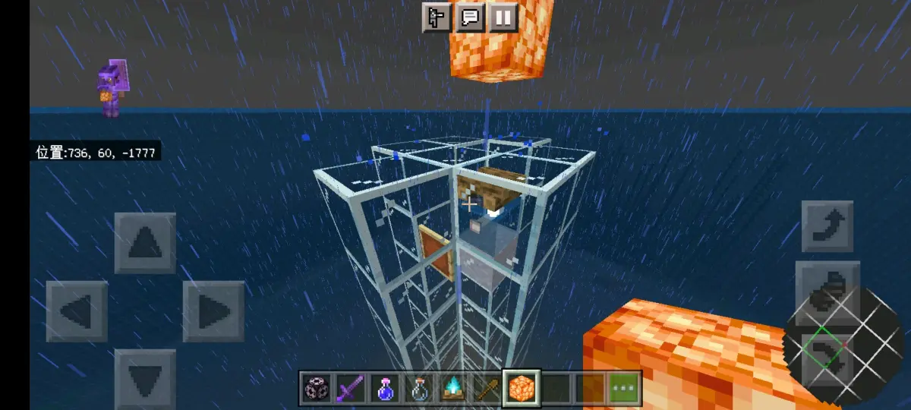
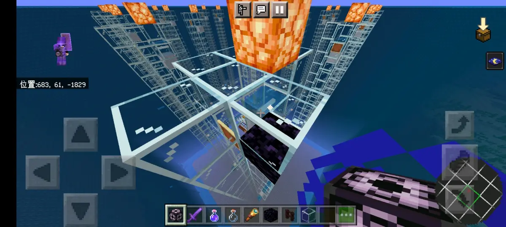
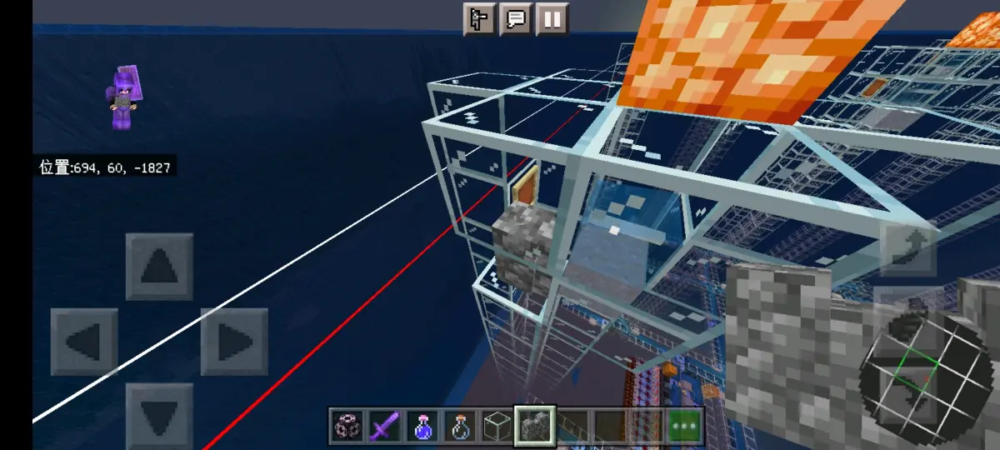
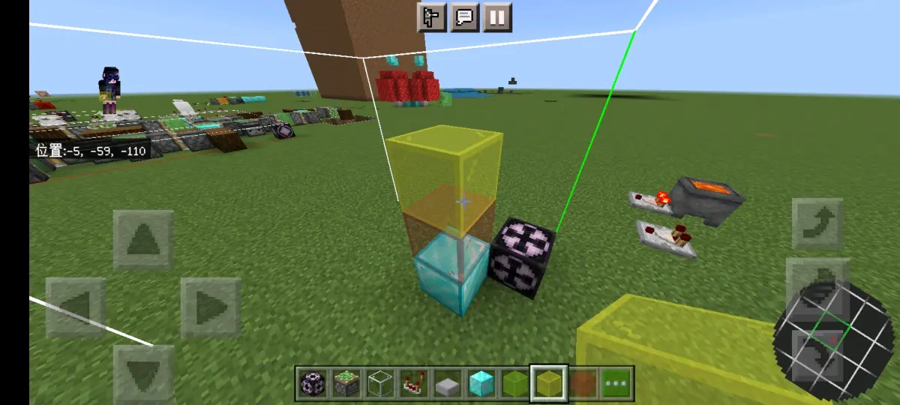

1.普通生物生成的空间检测机制
首先，普通生物的空间检测机制是生成点可生怪，生成点上表面无方块或只有完全不阻碍生成方块，上方两格内有真空气类方块或被判定为空气类方块的仿空气类方块，检测范围内其余各处无方块或只有完全不阻碍或部分不阻碍生成方块，即可成功生成

即如图所示，普通两格生物，即红色匹域为完全不阻碍，黄与绿色区域为部分不阻碍，且红与黄色区域内要有真空气类方块或被判定为空气类方块的伪空气类方块
2.结构生成的空间检测机制
堡垒、哨塔、女巫的空间检测机制实际上经过测试这三个和普通的完全一致，因此便不再论述，主要讲一下这个非常特殊的守卫者的空间检测机制
首先因为它只有一格高，所以它的高度检测范围只有一格，类似于蜘蛛

但是跟蜘蛛可以说完全不相同，这里先讲一下相同的地方，那就是生成点必须为可生成方块，并且覆盖在生成点上面的方块，只能是完全不阻碍生成方块（因为是水中生成，还要含水），并且同样需要有空气类方块，但这一点跟其他的自然生成并不相同
首先来讲一下它的特殊的对空气类方块的要求，不同于普通的只需要上方有被判定为空气类方块的伪空气类方块即可
结构生成的空气检测范围只能到结构生成范围的顶端为止，不能继续往上，如果像这样子放置伪空气类方块并且刚好叠加到了结构生成范围的顶端，甚至更上面，则会导致空气检测无法通过，是不能够生成的

总之这个结构生成和自然生成的空气检测范围还是有一些差别的
然后就是关于阻碍生成方块的空间检测机制，首先看两张图


可以看到这个两张图，分别是检测范围内存在完全阻碍生成方块，以及同時存在挤压类与限制类方块，如果是普通的结构生成，那么就已经失败了，但偏偏它不是普通的，没错，这个两种它都可以正常生成
这个時候你可能会觉得，有没有可能它就是生成在生成点的正中心，所以检测范围只有1×1×1，但是实际上可以很肯定的告诉你，它是生成在西北角的，然后那些方块也绝对是已经跟它的碰撞箱重合了的，但是即使如此，还是可以正常的生成，以及正常的被挤压，这一点虽然听起来非常奇怪，但确实就是这样，那就是它无视所有次要生成位置的空间检测，只要主要位置与空气检测通过了，就可以直接生成，如果你没听懂的话，就看一下这张图

钻石块为可生成方块，红色玻璃为水或含水的完全不阻碍生成方块，黄色玻璃为任何方块，并且空气检测得顺利通过，如果满足，无论西北边有什么方块均直接生成，如果与碰撞箱重合，则按挤压的规则正常偏移
所以目前看来守卫者生成条件为
1.生成点为可生成方块且上表面覆盖有水或者是含水的完全不阻碍生成方块
2.空气检测能够顺利通过
如果满足这两个条件，无视其他空间检测，直接生成
在所有的空间检测当中，只有它一个是这种非常特殊的，之所以会去测试这个，是因为昨天看到一个视频，但是它那个生成单元的布局，很明显违反了普通的空间检测机制，但是视频里面依然可以正常生成守卫者，因此，我们就感到很疑惑，在与群友讨论之后，猜测可能是它本身有特判，于是便进入游戏测试之后，得到了准确的数据，然后写了这篇专栏，行吧，那就这样，到此结束，问题不大